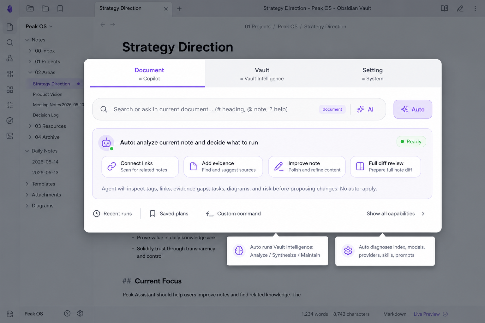
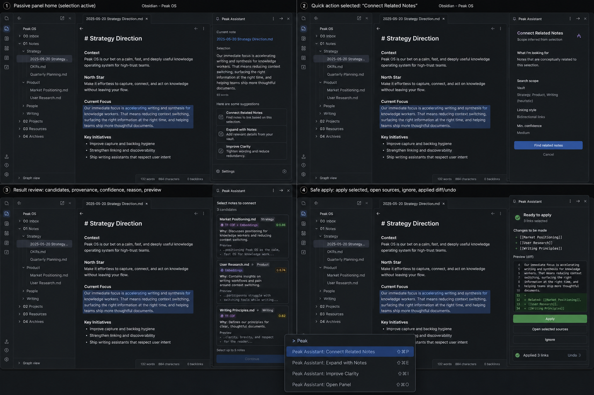
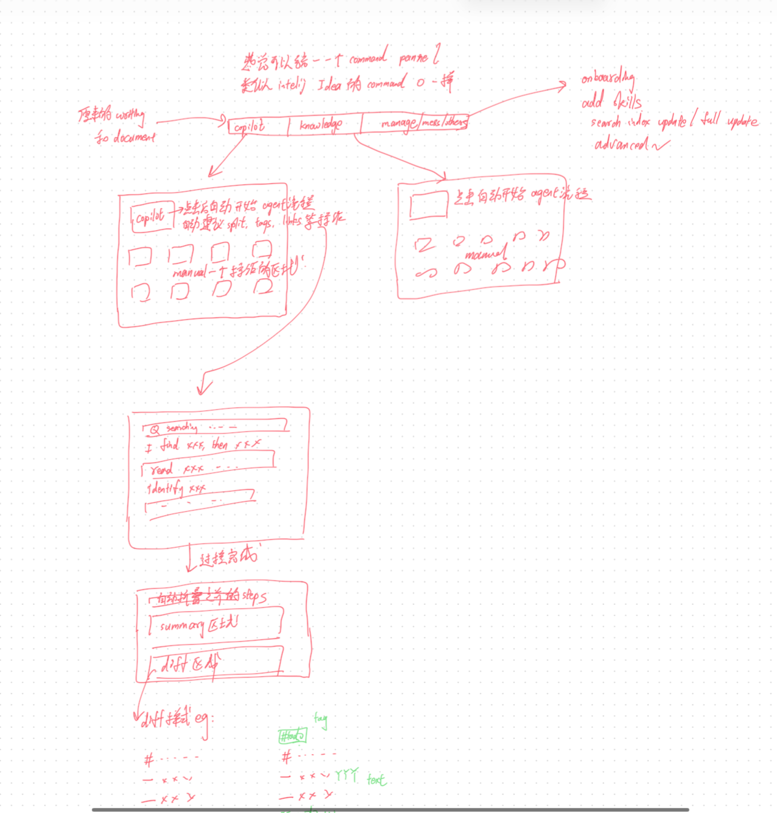
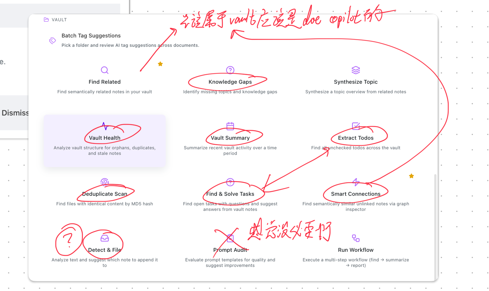
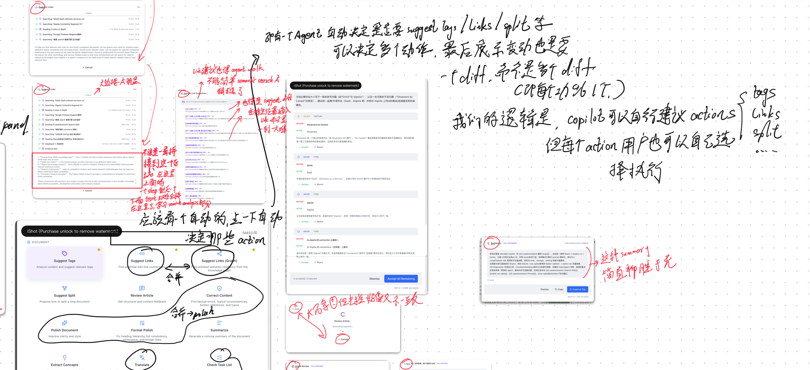
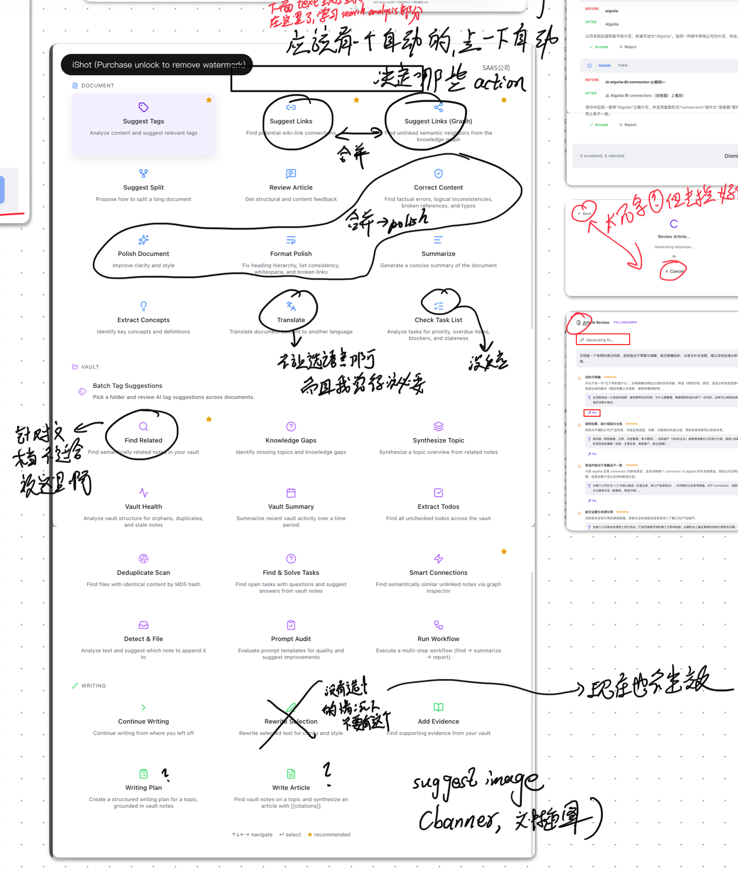

Peak Assistant 只按两张符合方向的图继续设计
报告从“解释很多方案”收敛成“视觉基准 + UX 流程”。旧 HTML 原型和 full-page 方向只保留为历史，不再作为当前设计依据。
基准 1：Search-like tab + Auto agent 入口。基准 2：Obsidian panel + quick action + review/apply。
Document = Copilot，Vault = Vault Intelligence，Setting = Manage System。这是 UI 命名，不是再拆出一堆功能页。
视觉探索优先 imagegen 图；HTML 报告只负责组织、引用和说明，不再手写复杂原型当主方案。
1. 两张视觉基准
后续所有 UX 细节都从这里展开
顶部 tab、紫色 active underline、大搜索框、Auto 主按钮。Document/Vault/Setting 只是入口域，Auto 才是核心操作。

保持在 Obsidian 里，右侧 panel 承接建议、配置、候选审核、安全 apply 和 undo。
2. 每个设计部分怎么跟两张图对齐
不再按“功能卡片”设计，而按入口、自动规划、审核和应用设计Entry Surface
大弹出面板只保留 Document / Vault / Setting 顶部 tab。样式按基准 1：浅色面板、紫色 active underline、宽搜索框。
Auto Agent
每个 tab 都有 Auto。点一下就开始：分析上下文、选 capabilities、跑 safe discovery、生成 review artifacts。
Daily Panel
右侧 panel 只承担轻量工作：当前 note 摘要、2-3 个建议、运行配置、候选结果、pending review。
Review / Apply
轻量建议可在侧栏审核；整段/全文变化进入 rendered document diff，必须有红/绿线、来源和 undo。
3. Panel 流程蓝图
把 Auto、Analysis、功能步骤和 review 统一到同一个侧栏状态机Auto plan for this note
Agent reads current note, selection, backlinks, tags, graph neighbors, and recent edits before choosing steps.
Detect note scope, selection, intent, missing links, evidence gaps, and mutation risk.
Planner selects Connect Links, Add Evidence, Improve Note, and Full Diff Review.
Search vault, inspect sources, score candidates, and record why each result appears.
Show candidates, provenance, confidence, preview, diff, and apply controls.
Panel 状态机
和 AI Analysis 一致的展示原则
用户需要看到 agent 正在想什么，但不要被 chain-of-thought 淹没。展示的是可产品化的分析摘要：输入信号、选择理由、运行步骤、结果证据、风险和下一步。
4. 功能触发后的 Step 展示
每个能力都有自己的小流程，但外层交互保持一致Connect Links
适合从选中文本、当前段落或整篇 note 触发。
Add Evidence
适合文章、研究笔记和观点段落。
Improve Note
适合 polish、结构调整和局部改写。
Vault Intelligence
Vault tab 的 Auto 不再让用户先选 Analyze / Synthesize / Maintain。
Manage System
Setting tab 的 Auto 是系统诊断，不是知识工作流。
Manual Command
手动搜索是 fallback，不是默认首页。
5. UX 主流程
从 tab 到 Auto，再到可审核结果从侧栏、命令面板、选中文本、toolbar 打开同一个弹出入口。
Document 处理当前 note；Vault 处理知识库范围；Setting 处理系统状态。
Auto 是主按钮，不是“打开更多卡片”。它直接启动 agent planner。
系统决定要跑 links、evidence、improve、tasks、synthesis、health 或 settings diagnostics。
输出是 proposals、source cards、diff、digest 或 maintenance queue；用户审核后应用。
6. Tab 行为
三个 tab 的 Auto 都是 agent 自动编排，不是静态工具分类Document / Copilot
Auto 会检查当前 note 或 selection：tags、links、evidence gaps、tasks、diagram opportunities、rewrite risk。结果进入右侧 panel 或 full diff。
Vault / Vault Intelligence
Auto 会先解析 scope，再选择 Analyze / Synthesize / Maintain。它可以生成 digest、source-backed report 或 maintenance queue。
Setting / Manage System
Auto 会诊断 index、models、providers、skills、prompts、usage 和配置健康。它不混进日常写作建议。
7. Review 规则
侧栏负责轻量审核；文档级修改必须进入 rendered diffCurrent rendered note
小侧栏可以展示 link/tag/evidence 候选，但不适合承载全文改写。
The product can provide tags, links, summaries, and review comments from the side panel.
Proposed rendered note
全文或多段修改要在 rendered Markdown 上审核，不能只给 raw markdown。
Every document mutation is reviewed in a full rendered diff before apply, with provenance and undo.
8. 原始证据缩略图
这些是设计推导证据，不是当前视觉基准


